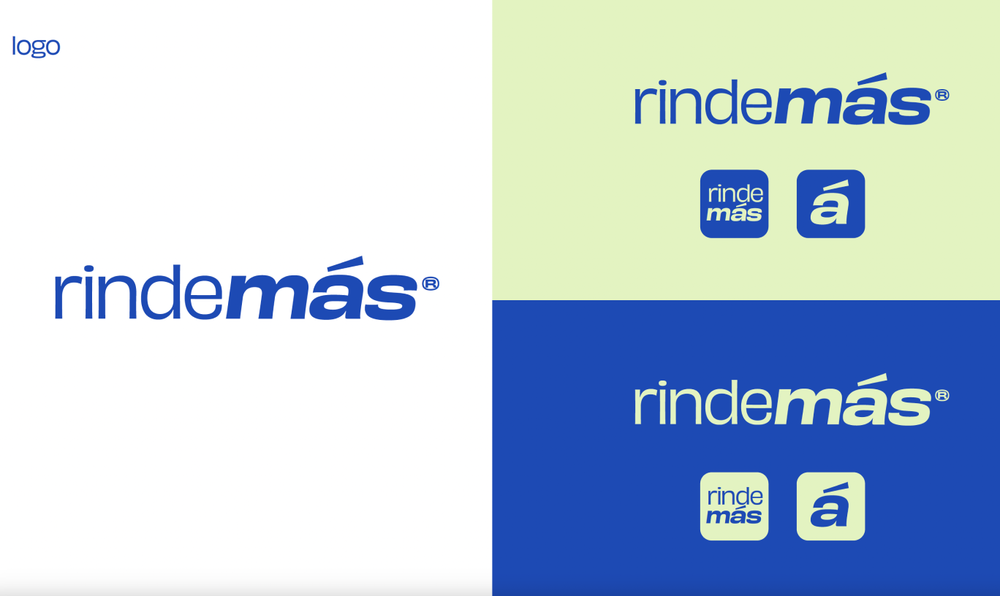
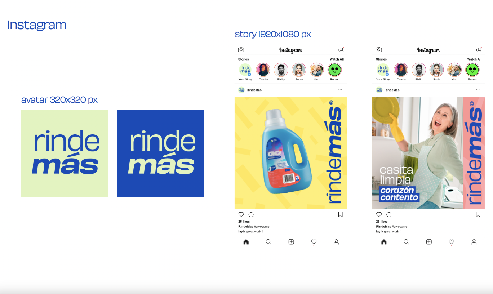
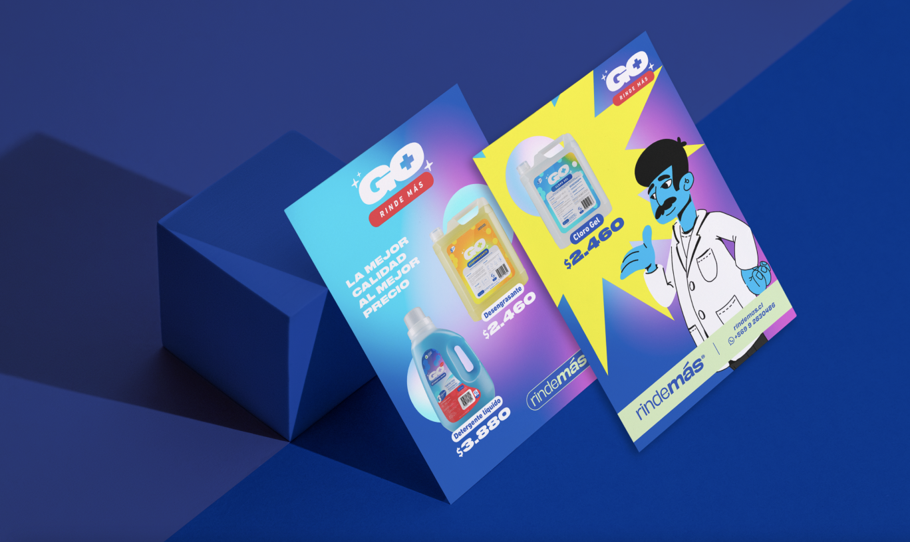
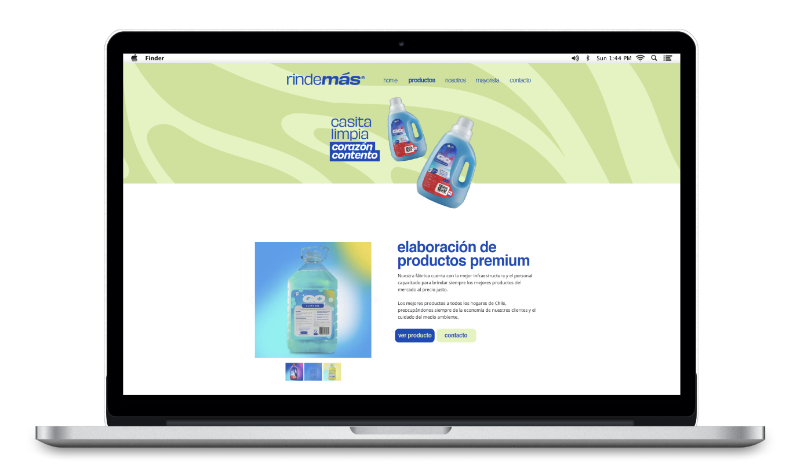

<!-- Modal 10-->
<div class="modal fade modal-xl" id="exampleModal2" tabindex="-1" aria-labelledby="exampleModalLabel" aria-hidden="true">
  <div class="modal-dialog">
    <div class="modal-content">
      <div class="modal-header">
        <button type="button" class="btn-close" data-bs-dismiss="modal" aria-label="Close"></button>
      </div>
      <div class="modal-body">

<div class=" row justify-content-center align-items-center" style="margin-bottom: 40px; margin-top: 40px;">
  <h2 class="text-center col-12 m-0 px-3 py-2" style="font-family:PPMonument; font-size: 48px; ">Rinde Más</h2>
  <p class="text-center text-dark fs-6 fw-light font-family-Helvetica Neue col-12 m-0 px-3 py-2">Brand Refresh and Social Media Strategy</p>
<br> <p style="padding-left: 10%; padding-right: 10%;">
    Rinde Más is a trusted cleaning product brand in Chile with over a decade in the market. With the introduction of their new Go+ range it was important for Rinde Más to look at the master brand and how they could modernise it too.

We started with an update to the logo and brand colours opting for a palette of blue and green symbolising trust, growth and commitment to the environment. A wordmark logo was chosen for its simplicity, and tagline “casita limpia corozón contento” clean house happy heart ~ helps convey Rinde Más’ vision.

To help Rinde Más sell its new image and promote its many products we put together a strategy and set of social media assets highlighting Rinde Más’ product range. Simple patterned backgrounds in primary colours were designed to highlight specific products and offers.
</p>






      </div>
      <div class="modal-footer">

      </div>
    </div>
  </div>
</div>
